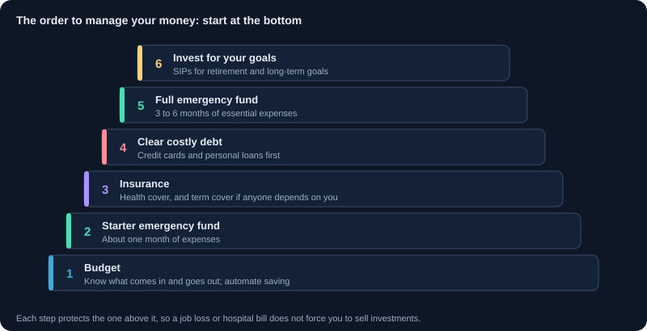
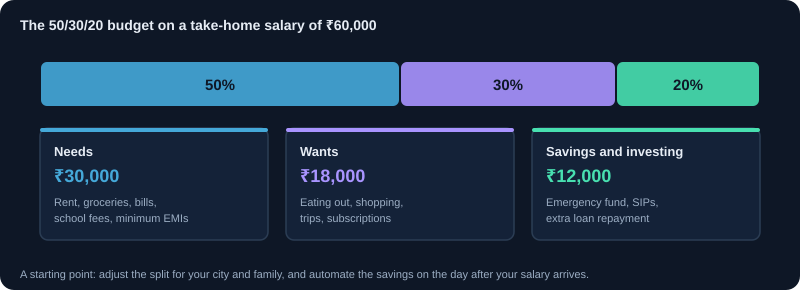
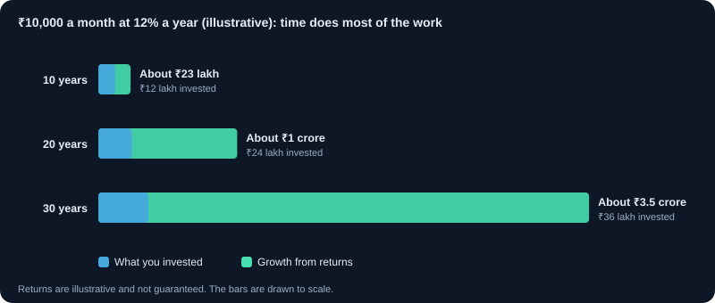

पर्सनल फ़ाइनेंस: अपने पैसे का प्रबंधन
बजट, इमरजेंसी फ़ंड, बीमा, लोन और क्रेडिट स्कोर, लक्ष्य, रिटायरमेंट, टैक्स योजना और धोखाधड़ी से सुरक्षा: निवेश से पहले और उसके साथ अपने पैसे का सही प्रबंधन कैसे करें।
1. पर्सनल फ़ाइनेंस में क्या आता है
पर्सनल फ़ाइनेंस का मतलब है यह तय करना कि आप पैसा कैसे कमाते, ख़र्च करते, बचाते, उधार लेते, सुरक्षित रखते और बढ़ाते हैं, ताकि जीवन के लक्ष्य पूरे हों और कोई बुरी घटना आपको बर्बाद न करे। यह अच्छे शेयर चुनने से भी ज़्यादा अहम है: सामान्य वेतन और अच्छी आदतों वाला व्यक्ति अक्सर सब कुछ ख़र्च कर देने वाले ऊँची कमाई वाले से ज़्यादा संपन्न होता है।
- कैश फ़्लो: यह जानना कि हर महीने क्या आता है और क्या जाता है।
- सुरक्षा: इमरजेंसी फ़ंड और सही बीमा।
- क़र्ज़: तभी उधार लेना जब समझदारी हो, और समय पर चुकाना।
- लक्ष्य और निवेश: हर लक्ष्य के लिए उपयुक्त निवेश चुनना।
- टैक्स और काग़ज़ात: अपनी कमाई का ज़्यादा हिस्सा बचाना, और यह पक्का करना कि परिवार आपके पैसे तक पहुँच सके।
2. जानें कि आप कहाँ खड़े हैं: नेट वर्थ
नेट वर्थ यानी आपके पास जो कुछ है, उसमें से आप पर जो बकाया है उसे घटाना। यह वित्तीय प्रगति का सबसे अच्छा पैमाना है, वेतन से कहीं बेहतर। इसे साल में एक बार निकालें।
| मद | ₹ |
|---|---|
| बचत खाता और फ़िक्स्ड डिपॉज़िट | 1,50,000 |
| म्यूचुअल फ़ंड और शेयर | 3,00,000 |
| EPF बैलेंस | 4,50,000 |
| कार (आज की बिक्री क़ीमत) | 3,00,000 |
| कुल संपत्ति | 12,00,000 |
| बकाया कार लोन | 1,80,000 |
| क्रेडिट कार्ड बकाया | 20,000 |
| कुल देनदारी | 2,00,000 |
| नेट वर्थ | 10,00,000 |
संपत्ति का मूल्य वह रखें जिस पर वह आज बिकेगी, न कि जो आपने चुकाया था। कार की क़ीमत हर साल घटती है, इसलिए लोन पर ली गई कार संपत्ति जैसी लगने के बावजूद आपकी नेट वर्थ घटा सकती है।
3. ऐसा बजट बनाएँ जिसे निभा सकें
बजट आपके पैसे की योजना है, सज़ा नहीं। शुरुआत के लिए आसान तरीक़ा है 50/30/20 नियम, जो हाथ में आने वाले वेतन पर लगता है। प्रतिशत को अपने शहर, परिवार और आय के हिसाब से बदलें।
| हिस्सा | प्रतिशत | ₹60,000 वेतन पर | उदाहरण |
|---|---|---|---|
| ज़रूरतें | 50% | ₹30,000 | किराया, राशन, बिल, स्कूल फ़ीस, न्यूनतम EMI |
| इच्छाएँ | 30% | ₹18,000 | बाहर खाना, शॉपिंग, यात्रा, सब्सक्रिप्शन |
| बचत और निवेश | 20% | ₹12,000 | इमरजेंसी फ़ंड, SIP, लोन की अतिरिक्त अदायगी |
बैंक और UPI स्टेटमेंट से एक महीने का ख़र्च देखें: ज़्यादातर लोग नतीजे देखकर चौंक जाते हैं। फिर पहले ख़ुद को भुगतान करें: वेतन आने के अगले दिन बचत और SIP का ऑटोमैटिक ट्रांसफ़र लगाएँ, और जो बचे उसे ख़र्च करें। अगर EMI और किराया ही आय का बड़ा हिस्सा ले रहे हैं, तो उस 20% को बढ़ाना आपका पहला लक्ष्य है।
4. इमरजेंसी फ़ंड बनाएँ
इमरजेंसी फ़ंड नौकरी छूटने, इलाज के बिल या ज़रूरी मरम्मत के लिए अलग रखा पैसा है। यह मुश्किल समय में निवेश तोड़ने या ऊँचे ब्याज पर उधार लेने से बचाता है। यह शेयरों में निवेश से पहले आता है।
- आकार: 3 से 6 महीने के ज़रूरी ख़र्च; आय अनियमित हो या आप अकेले कमाने वाले हों तो 6 से 12 महीने।
- कहाँ रखें: बचत खाता, स्वीप-इन फ़िक्स्ड डिपॉज़िट या लिक्विड फ़ंड। यह सुरक्षित हो और एक-दो दिन में मिल जाए।
- कहाँ नहीं: शेयर, इक्विटी फ़ंड, सोना या लंबे लॉक-इन वाले उत्पाद। ज़रूरत के समय ये गिरे हुए या बंद हो सकते हैं।
- उदाहरण: ₹35,000 महीने के ज़रूरी ख़र्च × 6 = ₹2,10,000। हर महीने ₹10,000 बचाकर आप 21 महीने में वहाँ पहुँच जाते हैं।
- इसे केवल असली आपात स्थिति में इस्तेमाल करें, और बाद में फिर से भरें।
5. बीमा से ख़ुद को सुरक्षित करें
बीमा उन नुक़सानों से बचाने के लिए है जिन्हें आप ख़ुद नहीं उठा सकते। यह सुरक्षा की लागत है, निवेश नहीं। गंभीरता से निवेश शुरू करने से पहले ये दो बीमा लें।
- टर्म लाइफ़ इंश्योरेंस: अगर आप पर कोई निर्भर है, तो पॉलिसी अवधि में आपकी मृत्यु होने पर यह उन्हें बड़ी राशि देता है। आम नियम है सालाना आय का 10 से 15 गुना कवर, और बकाया लोन जोड़कर। जीवन बीमा का यह सबसे सस्ता तरीक़ा है।
- हेल्थ इंश्योरेंस: एक बार अस्पताल में भर्ती होना सालों की बचत ख़त्म कर सकता है। नियोक्ता का कवर होने पर भी अपनी पॉलिसी लें, क्योंकि वह आमतौर पर नौकरी के साथ ख़त्म हो जाता है। बीमा राशि, कमरे के किराए की सीमा, वेटिंग पीरियड, को-पेमेंट और नेटवर्क अस्पताल जाँचें।
- पर्सनल एक्सीडेंट कवर और वाहन बीमा: उपयोगी हैं, और थर्ड-पार्टी मोटर बीमा क़ानूनन ज़रूरी है।
- बीमा और निवेश को मिलाने वाले उत्पादों (एंडोमेंट, मनी-बैक और कई ULIP) से सावधान रहें। इनमें आमतौर पर कवर कम और रिटर्न साधारण होता है। टर्म बीमा और निवेश को अलग रखना आमतौर पर सस्ता और साफ़ है।
- प्रपोज़ल फ़ॉर्म में स्वास्थ्य और आदतों की सही जानकारी दें, और परिवार को पॉलिसी के बारे में बताएँ। छिपाई गई जानकारी दावा ख़ारिज होने का आम कारण है।
6. समझदारी से उधार लें
लोन से आप आज ख़रीदते हैं और बाद में ब्याज के साथ चुकाते हैं। कुछ लोन भविष्य बना सकते हैं, जैसे समझदारी से लिया होम या एजुकेशन लोन। कुछ केवल उन चीज़ों पर ख़र्च होते हैं जिनकी क़ीमत घटती है। ऊँचे ब्याज का क़र्ज़ आमतौर पर निवेश की भरोसेमंद कमाई से ज़्यादा महँगा होता है, इसलिए निवेश से पहले उसे चुकाएँ।
- कुल EMI हाथ में आने वाले वेतन के लगभग 40% से कम रखें। जितनी कम, उतना सुरक्षित।
- केवल EMI नहीं, कुल लागत की तुलना करें: लंबी अवधि से EMI घटती है पर कुल ब्याज बढ़ता है।
- उदाहरण: ₹10 लाख, 9% पर, 5 साल के लिए: EMI लगभग ₹20,760, यानी कुल लगभग ₹12.46 लाख चुकाते हैं। ब्याज लगभग ₹2.46 लाख है।
- पहले सबसे महँगा क़र्ज़ चुकाएँ (एवलांच तरीक़ा), या जल्दी जीत से प्रेरणा मिलती हो तो सबसे छोटा (स्नोबॉल तरीक़ा)।
- RBI के नियमों के तहत, व्यक्तियों द्वारा ग़ैर-व्यावसायिक काम के लिए लिए गए फ़्लोटिंग रेट लोन पर प्रीपेमेंट पेनल्टी नहीं ली जा सकती। लोन की शुरुआत में प्रीपेमेंट से सबसे ज़्यादा ब्याज बचता है।
- निवेश के लिए उधार लेने से बचें, और इंस्टेंट लोन ऐप से सावधान रहें। जाँचें कि क़र्ज़दाता RBI से नियंत्रित बैंक या NBFC है।
- किसी के गारंटर बनने पर उसका लोन आपकी ज़िम्मेदारी बन सकता है और आपके क्रेडिट स्कोर पर असर डाल सकता है।
7. क्रेडिट कार्ड और आपका क्रेडिट स्कोर
अगर आप हर महीने पूरा बिल चुकाते हैं तो क्रेडिट कार्ड उपयोगी है: बिना ब्याज के दिन और रिवॉर्ड मिलते हैं। बकाया रखने पर यह ख़तरनाक हो जाता है, क्योंकि ब्याज अक्सर 3% से 4% महीना, यानी लगभग 36% से 48% सालाना होता है।
- हमेशा पूरी बकाया राशि चुकाएँ, न्यूनतम राशि नहीं। ऑटो-पे लगाएँ।
- उदाहरण: 3.5% महीने पर ₹50,000 बकाया का पहले महीने ब्याज लगभग ₹1,750, और बकाया बना रहे तो साल भर में लगभग ₹21,000, GST और शुल्क अलग।
- क्रेडिट स्कोर (300 से 900, CIBIL जैसे ब्यूरो से) क़र्ज़दाताओं को बताता है कि आप उधार कैसे सँभालते हैं। 750 से ऊपर आमतौर पर अच्छा माना जाता है और इससे कम ब्याज मिल सकता है।
- क्या मदद करता है: हर EMI और कार्ड बिल समय पर चुकाना, कार्ड सीमा का छोटा हिस्सा (लगभग 30% से कम) इस्तेमाल करना, और लंबा रिकॉर्ड।
- क्या नुक़सान करता है: देर से भुगतान, बकाया से कम में लोन सेटल करना, और थोड़े समय में कई लोन के लिए आवेदन।
- आप हर ब्यूरो से साल में एक बार मुफ़्त पूरी क्रेडिट रिपोर्ट के हक़दार हैं। उसमें ग़लतियाँ और ऐसे लोन जाँचें जो आपने नहीं लिए।
8. संख्या और तारीख़ के साथ लक्ष्य बनाएँ
'मुझे ज़्यादा बचाना है' एक इच्छा है। 'मुझे बच्चे की पढ़ाई के लिए 10 साल में ₹20 लाख चाहिए' ऐसा लक्ष्य है जिसकी योजना बन सकती है। हर लक्ष्य, उसकी तारीख़ और भविष्य की क़ीमत लिखें, क्योंकि दाम बढ़ते हैं।
| पैसा कब चाहिए | उदाहरण | आमतौर पर उपयुक्त |
|---|---|---|
| 3 साल के भीतर | इमरजेंसी फ़ंड, वाहन, जल्द शादी | बचत खाता, फ़िक्स्ड या रेकरिंग डिपॉज़िट, लिक्विड फ़ंड |
| 3 से 5 साल | घर का डाउन पेमेंट | डेट फ़ंड, फ़िक्स्ड डिपॉज़िट, कंज़र्वेटिव हाइब्रिड फ़ंड |
| 5 साल से ज़्यादा | बच्चे की पढ़ाई, रिटायरमेंट | मुख्यतः विविध इक्विटी फ़ंड, साथ में PPF, EPF या NPS |
महँगाई का हिसाब रखें। 6% सालाना पर आज का ₹10 लाख का ख़र्च 10 साल में लगभग ₹17.9 लाख हो जाता है। और 20 साल तक बेकार पड़ा ₹1 लाख उतना ही ख़रीदेगा जितना आज लगभग ₹31,000 ख़रीदता है। लक्ष्य जितना पास आए, पैसे का उतना बड़ा हिस्सा सुरक्षित विकल्पों में ले जाएँ।
9. जल्दी शुरू करना इतना अहम क्यों है
कंपाउंडिंग का मतलब है कि आपके रिटर्न पर भी रिटर्न मिलता है। इसका सबसे ताक़तवर हिस्सा समय है, राशि या थोड़े बेहतर रिटर्न से भी ज़्यादा।
| ₹10,000 महीना, 12% सालाना पर (उदाहरण) | आप लगाते हैं | अंत में मूल्य |
|---|---|---|
| 10 साल के लिए | ₹12 लाख | लगभग ₹23 लाख |
| 20 साल के लिए | ₹24 लाख | लगभग ₹1 करोड़ |
| 30 साल के लिए | ₹36 लाख | लगभग ₹3.5 करोड़ |
10 साल देर से शुरू करने की क़ीमत केवल 10 साल की बचत नहीं है: अंतिम राशि का बड़ा हिस्सा जा सकता है। इक्विटी रिटर्न तय नहीं होते और 12% की गारंटी नहीं है, पर हर सकारात्मक रिटर्न पर यही पैटर्न रहता है। अभी छोटी राशि से शुरू करें, और आय बढ़ने पर राशि बढ़ाते जाएँ।
10. आपका पैसा कहाँ जा सकता है
कोई एक उत्पाद सबसे अच्छा नहीं। हर एक में सुरक्षा, रिटर्न, पहुँच और टैक्स का अलग संतुलन है। दरें बदलती हैं, इसलिए फ़ैसले से पहले मौजूदा आँकड़े देखें।
| विकल्प | जोखिम | पहुँच | किसके लिए अच्छा |
|---|---|---|---|
| बचत खाता | बहुत कम | कभी भी | रोज़ का पैसा, इमरजेंसी फ़ंड का हिस्सा |
| फ़िक्स्ड या रेकरिंग डिपॉज़िट | कम | जल्दी निकालने पर जुर्माना हो सकता है | लगभग 3 साल के भीतर के लक्ष्य |
| PPF | बहुत कम (सरकारी समर्थन) | 15 साल का लॉक-इन, बाद में आंशिक निकासी | लंबी अवधि की सुरक्षित बचत |
| EPF | बहुत कम | मुख्यतः रिटायरमेंट के लिए; आंशिक निकासी संभव | वेतनभोगियों का रिटायरमेंट |
| NPS | इक्विटी के हिस्से पर निर्भर | ज़्यादातर 60 साल की उम्र तक बंद | कम लागत की रिटायरमेंट बचत |
| डेट म्यूचुअल फ़ंड | कम से मध्यम | आमतौर पर कुछ दिनों में | 3 से 5 साल के लक्ष्य |
| इक्विटी म्यूचुअल फ़ंड और शेयर | छोटी अवधि में ज़्यादा | आमतौर पर कुछ दिनों में | 5 साल से ज़्यादा दूर के लक्ष्य |
| सोना | मध्यम | रूप पर निर्भर | विविधता के लिए छोटा हिस्सा |
बैंक जमा DICGC से प्रति जमाकर्ता प्रति बैंक ₹5 लाख तक बीमित हैं, ब्याज समेत। बिना जोखिम ऊँचे रिटर्न का वादा करने वाले से सावधान रहें: रिटर्न और जोखिम साथ चलते हैं।
11. रिटायरमेंट की योजना बनाएँ
रिटायरमेंट ज़्यादातर लोगों का सबसे बड़ा लक्ष्य है, और इसके लिए कोई लोन नहीं देगा। बिना वेतन के ख़र्च दशकों तक चलेंगे और महँगाई के साथ बढ़ेंगे।
- राशि का अनुमान: आज ₹50,000 महीने का ख़र्च 6% महँगाई पर 25 साल में लगभग ₹2.15 लाख महीना, यानी लगभग ₹25.8 लाख सालाना हो जाता है।
- आम नियम है रिटायरमेंट के समय सालाना ख़र्च का 25 से 30 गुना कोष: यहाँ लगभग ₹6.4 करोड़ से ₹7.7 करोड़। इसे मोटा अनुमान मानें और नियमित रूप से जाँचें।
- बुनियादी साधन: वेतनभोगी हों तो EPF, स्थिर बचत के लिए NPS और PPF, और लंबी अवधि की बढ़त के लिए इक्विटी फ़ंड।
- नौकरी बदलने पर EPF न निकालें: ट्रांसफ़र करें, ताकि वह बढ़ता रहे।
- बच्चों के लक्ष्यों के लिए रिटायरमेंट की बचत न रोकें। पढ़ाई के लिए लोन मिल सकता है, रिटायरमेंट के लिए नहीं।
- रिटायरमेंट पास आने पर पैसे का कुछ हिस्सा सुरक्षित विकल्पों में ले जाएँ, ताकि काम छोड़ने से ठीक पहले की गिरावट कम नुक़सान करे।
12. टैक्स की योजना बनाएँ, पर टैक्स को हावी न होने दें
अच्छी टैक्स योजना का मतलब है नियमों का सही इस्तेमाल, न कि टैक्स बचाने के लिए ख़राब उत्पाद ख़रीदना। टैक्स नियम अक्सर बदलते हैं, इसलिए हर साल incometax.gov.in पर या टैक्स पेशेवर से जाँचें।
- हर साल दोनों रेजीम की तुलना करें। नई रेजीम में स्लैब दरें कम हैं पर कटौतियाँ कम मिलती हैं; पुरानी रेजीम में PPF, EPF, ELSS, जीवन बीमा प्रीमियम, हेल्थ इंश्योरेंस और होम लोन ब्याज जैसी कटौतियाँ मिलती हैं। बजट 2025 के नियमों के तहत नई रेजीम में रिबेट के बाद ₹12 लाख तक की आय पर टैक्स नहीं है (वेतनभोगियों के लिए स्टैंडर्ड डिडक्शन के साथ ₹12.75 लाख)।
- कटौतियाँ तभी काम की हैं जब आप पुरानी रेजीम में हों और वह निवेश आप वैसे भी करना चाहते हों। मार्च में टैक्स बचाने के लिए ख़राब बीमा पॉलिसी न ख़रीदें।
- टैक्स बकाया न होने पर भी रिटर्न समय पर भरें। यह लोन और वीज़ा में मदद करता है, और घाटा आगे ले जाने के लिए ज़रूरी है।
- Form 26AS और एनुअल इन्फ़ॉर्मेशन स्टेटमेंट (AIS) देखें कि आपके नाम पर कौन-सी आय और TDS दर्ज है।
- शेयरों और म्यूचुअल फ़ंड के लाभ पर टैक्स के लिए टैक्स बेसिक्स मॉड्यूल देखें।
13. परिवार के लिए अपने पैसे तक पहुँच सुरक्षित करें
भारत में कई परिवारों का पैसा इसलिए खो जाता है क्योंकि किसी को उसकी जानकारी नहीं थी या काग़ज़ात नहीं थे। आज थोड़ी व्यवस्था बाद में बड़ी परेशानी से बचाती है।
- हर बैंक खाते, डीमैट खाते, म्यूचुअल फ़ंड फ़ोलियो, बीमा पॉलिसी और EPF खाते में नॉमिनी जोड़ें।
- नॉमिनी को पैसा मिलता है, पर क़ानूनी वारिस फिर भी उस पर दावा कर सकते हैं। वसीयत लिखें, ख़ासकर अगर संपत्ति हो या पारिवारिक स्थिति जटिल हो।
- जहाँ समझदारी हो, मुख्य संपत्ति जीवनसाथी के साथ संयुक्त रखें।
- सभी खातों, पॉलिसियों, लोन और पासवर्ड कहाँ रखे हैं इसकी एक सूची रखें, और किसी भरोसेमंद सदस्य को बताएँ कि वह कहाँ है। उसमें असली पासवर्ड या OTP कभी न लिखें।
- पक्का करें कि जीवनसाथी या परिवार का कोई वयस्क घर के वित्त को सँभालना जानता हो।
14. धोखाधड़ी से बचें
ठग डर, लालच और जल्दबाज़ी का फ़ायदा उठाते हैं। धीरे चलें: किसी असली बैंक, पुलिस अधिकारी या सरकारी एजेंसी को आपसे अगले पाँच मिनट में कुछ नहीं करवाना होता।
- OTP, PIN, CVV या पासवर्ड किसी को न बताएँ, बैंक से बोलने का दावा करने वालों को भी नहीं।
- पैसा पाने के लिए कभी UPI PIN डालने या QR कोड स्कैन करने की ज़रूरत नहीं होती। इनसे केवल पैसा जाता है।
- 'डिजिटल अरेस्ट' कॉल धोखा हैं। पुलिस और एजेंसियाँ वीडियो कॉल पर गिरफ़्तार नहीं करतीं, न नाम साफ़ करने के लिए पैसे माँगती हैं।
- गारंटीड रिटर्न की योजनाओं, WhatsApp या Telegram ग्रुप की स्टॉक टिप्स और नक़ली ट्रेडिंग ऐप से बचें। जाँचें कि सलाहकार SEBI की वेबसाइट पर पंजीकृत है।
- अजनबी के कहने पर स्क्रीन-शेयरिंग ऐप इंस्टॉल न करें, न APK फ़ाइल खोलें।
- पैसा गया हो तो तुरंत: साइबर क्राइम हेल्पलाइन 1930 पर कॉल करें, cybercrime.gov.in पर रिपोर्ट करें, और बैंक को बताएँ। जल्दी करने से ट्रांसफ़र रुकने की संभावना बढ़ती है।
- बैंक की अनसुलझी शिकायत के लिए cms.rbi.org.in पर RBI ओम्बड्समैन के पास जाएँ।
15. काम का क्रम, और सालाना जाँच
अगर सब बहुत ज़्यादा लगे, तो इन क़दमों को क्रम से करें। हर क़दम अगले को सुरक्षित बनाता है।
- 1. ख़र्च देखें और बजट बनाएँ।
- 2. लगभग एक महीने के ख़र्च का छोटा शुरुआती इमरजेंसी फ़ंड बनाएँ।
- 3. हेल्थ इंश्योरेंस लें, और कोई निर्भर हो तो टर्म इंश्योरेंस।
- 4. क्रेडिट कार्ड और पर्सनल लोन जैसा ऊँचे ब्याज का क़र्ज़ चुकाएँ।
- 5. 3 से 6 महीने का इमरजेंसी फ़ंड पूरा करें।
- 6. रिटायरमेंट से शुरू करके, अपने लक्ष्यों के लिए SIP से निवेश करें।
- 7. साल में एक बार: नेट वर्थ निकालें, लक्ष्य और बीमा कवर देखें, क्रेडिट रिपोर्ट और नॉमिनी जाँचें, टैक्स रेजीम की तुलना करें, और आय के साथ SIP बढ़ाएँ।
चार्ट और चित्र



कार्य उदाहरण
₹40,000 पर पहला बजट
हाथ में वेतन ₹40,000 है। किराया, खाना और बिल ₹24,000 (60%) लेते हैं, जो 50% के नियम से ज़्यादा है पर बड़े शहर में आम है। इच्छाएँ घटाकर ₹8,000 (20%) करने पर ₹8,000 (20%) बचत के लिए बचते हैं: ₹4,000 इमरजेंसी फ़ंड में और ₹4,000 की SIP, दोनों हर महीने की 2 तारीख़ को ऑटोमैटिक।
कितना टर्म कवर चाहिए?
सालाना आय ₹8 लाख है और ₹15 लाख का होम लोन है। आय का 10 से 15 गुना यानी ₹80 लाख से ₹1.2 करोड़, और ₹15 लाख का लोन जोड़कर लगभग ₹1 करोड़ से ₹1.35 करोड़। परिवार के काम आ सकने वाले मौजूदा निवेश से यह आँकड़ा घट सकता है।
लोन चुकाएँ या निवेश करें?
14% का पर्सनल लोन आमतौर पर पहले चुकाना चाहिए: इसे चुकाना 14% के पक्के रिटर्न जैसा है, जो कोई सुरक्षित निवेश नहीं देता। 8.5% का होम लोन कड़ा फ़ैसला है: कई लोग SIP जारी रखते हुए हर साल थोड़ा प्रीपेमेंट करते हैं, ख़ासकर जब लोन शुरुआती सालों में हो।
वास्तविक परिस्थितियाँ
बिना सहारे के नौकरी जाना
एक सॉफ़्टवेयर इंजीनियर के पास इक्विटी फ़ंड में ₹6 लाख हैं पर इमरजेंसी फ़ंड नहीं, और बाज़ार की 25% गिरावट के दौरान नौकरी चली जाती है। EMI के लिए नकद चाहिए, तो वे निचले भाव पर ₹3 लाख के फ़ंड बेचते हैं। छह महीने का ख़र्च अलग होता तो फ़ंड बाज़ार सँभलने तक छोड़े जा सकते थे।
नियोक्ता का हेल्थ कवर ख़त्म
45 साल के एक व्यक्ति केवल कंपनी के हेल्थ प्लान पर निर्भर हैं। नौकरी छोड़ने और डायबिटीज़ होने के बाद नई पॉलिसी में वेटिंग पीरियड, ज़्यादा प्रीमियम और संभावित अपवाद हैं। 30 की उम्र में बुनियादी निजी पॉलिसी लेने से कवर लगातार बना रहता।
मिनिमम ड्यू का जाल
एक कार्ड धारक साल भर ₹1 लाख के बकाया पर केवल न्यूनतम राशि चुकाता है और छोटे ख़र्च करता रहता है। बिल मुश्किल से घटता है जबकि लगभग 40% सालाना ब्याज जुड़ता जाता है। बकाया को सस्ते पर्सनल लोन में ले जाकर और कार्ड का इस्तेमाल रोककर यह चक्र टूटता है।
'बैंक' से आया कॉल
कॉल करने वाला आपका नाम जानता है और कहता है कि OTP न देने पर कार्ड बंद हो जाएगा। बैंक इसे कभी नहीं माँगते। आप फ़ोन रखते हैं, कार्ड के पीछे लिखे नंबर पर कॉल करते हैं, और कोई समस्या नहीं मिलती। OTP देकर पैसा गया होता तो पहला क़दम तुरंत 1930 और बैंक होता।
उपयोग के मामले
- साल में एक बार नेट वर्थ निकालना और उसका रुझान देखना।
- वेतन के अगले दिन बचत और SIP के ऑटोमैटिक ट्रांसफ़र लगाना।
- ब्याज दर की तुलना टैक्स के बाद के यथार्थवादी रिटर्न से करके लोन चुकाने या निवेश का फ़ैसला करना।
- शादी, बच्चे या नए होम लोन के बाद बीमा कवर की समीक्षा।
- अनुमान की जगह असली आँकड़ों से हर साल टैक्स रेजीम चुनना।
मुख्य बातें
- कमाई से कम ख़र्च करें, और बचे हुए को ऑटोमैटिक करें।
- इमरजेंसी फ़ंड और बीमा शेयरों में निवेश से पहले आते हैं।
- पहले ऊँचे ब्याज का क़र्ज़ चुकाएँ; क्रेडिट कार्ड का पूरा बिल हर महीने भरें।
- हर लक्ष्य की राशि और तारीख़ तय करें, और निवेश को उपलब्ध समय से मिलाएँ।
- जल्दी शुरू करें: संपत्ति के लिए समय लगभग हर चीज़ से ज़्यादा काम करता है।
- नॉमिनी और रिकॉर्ड अपडेट रखें, और OTP या PIN कभी साझा न करें।
मुख्य शब्द, समझाए गए
- नेट वर्थ
- आपकी सारी संपत्ति में से सारी देनदारी घटाकर बची राशि। वित्तीय प्रगति का सबसे अच्छा एकल पैमाना।
- इमरजेंसी फ़ंड
- 3 से 6 महीने के खर्च के लिए नकद या बहुत सुरक्षित, तुरंत उपलब्ध बचत। इसे निवेश से अलग रखें।
- टर्म इंश्योरेंस
- शुद्ध जीवन बीमा, जो पॉलिसी अवधि में मृत्यु होने पर परिवार को बड़ी राशि देता है; जीवित रहने पर कोई रिटर्न नहीं।
- हेल्थ इंश्योरेंस
- बीमा राशि तक अस्पताल और इलाज का ख़र्च देने वाली पॉलिसी, उसके वेटिंग पीरियड और सीमाओं के अधीन।
- EMI (मासिक किस्त)
- समान मासिक किस्त: लोन चुकाने की तय मासिक राशि, जिसमें ब्याज और मूलधन दोनों होते हैं।
- क्रेडिट स्कोर
- CIBIL जैसे ब्यूरो का 300 से 900 का अंक, जो क़र्ज़दाताओं को बताता है कि आप कितने भरोसे से चुकाते हैं। 750 से ऊपर आमतौर पर अच्छा।
- कंपाउंडिंग (चक्रवृद्धि)
- ऐसा रिटर्न जो समय के साथ अपना भी रिटर्न कमाता है, इसलिए वृद्धि तेज़ होती है।
- महँगाई (इन्फ़्लेशन)
- समय के साथ सामान्य कीमतों में वृद्धि, जो आपके पैसे की क्रय शक्ति घटाती है।
- एसेट एलोकेशन
- लक्ष्य और जोखिम के आधार पर पैसे को इक्विटी, डेट, सोना और नकद जैसी एसेट श्रेणियों में बाँटना।
- विविधीकरण
- किसी एक निवेश के नुकसान का असर घटाने के लिए पैसा अलग-अलग निवेशों में बाँटना।
- SIP
- Systematic Investment Plan: किसी फंड में नियमित अंतराल पर तय राशि निवेश करना।
- PPF (पब्लिक प्रोविडेंट फ़ंड)
- पब्लिक प्रोविडेंट फ़ंड: 15 साल के लॉक-इन वाली सरकारी समर्थन की बचत योजना, जिसकी ब्याज दर हर तिमाही तय होती है।
- EPF (कर्मचारी भविष्य निधि)
- कर्मचारी भविष्य निधि: वेतनभोगियों की रिटायरमेंट बचत, जिसमें कर्मचारी और नियोक्ता दोनों का योगदान होता है।
- NPS (नेशनल पेंशन सिस्टम)
- नेशनल पेंशन सिस्टम: कम लागत की बाज़ार-आधारित रिटायरमेंट योजना, जिसका ज़्यादातर पैसा 60 की उम्र तक बंद रहता है।
सीखने वालों के सामान्य प्रश्न
वेतन का कितना हिस्सा बचाना चाहिए?
हाथ में आने वाले वेतन का 20% अच्छा लक्ष्य है, और देर से शुरू किया हो तो ज़्यादा। अभी संभव न हो तो जो हो सके, 5% भी, उससे शुरू करें और हर वेतन वृद्धि पर बढ़ाएँ। पहली राशि से ज़्यादा आदत मायने रखती है।
पहले निवेश करूँ या लोन चुकाऊँ?
पहले क्रेडिट कार्ड और पर्सनल लोन जैसा ऊँचे ब्याज का क़र्ज़ चुकाएँ, क्योंकि कोई सुरक्षित निवेश भरोसे से उन दरों को नहीं हराता। होम लोन जैसे कम ब्याज वाले लोन के साथ दोनों कर सकते हैं, बशर्ते इमरजेंसी फ़ंड और बीमा हो।
क्या नियोक्ता का हेल्थ इंश्योरेंस काफ़ी है?
आमतौर पर नहीं। यह नौकरी के साथ ख़त्म होता है और परिवार के लिए इसका कवर कम हो सकता है। जवान और स्वस्थ रहते अपनी पॉलिसी लेने से कवर बना रहता है और बाद में वेटिंग पीरियड या अस्वीकृति का जोखिम घटता है।
क्या अपना क्रेडिट स्कोर देखने से वह घटता है?
नहीं। अपना स्कोर देखना सॉफ़्ट इन्क्वायरी है और इसका कोई असर नहीं होता। थोड़े समय में लोन या कार्ड के आवेदन पर क़र्ज़दाताओं की कई हार्ड इन्क्वायरी इसे घटा सकती हैं।
क्या LIC या दूसरी एंडोमेंट पॉलिसियाँ अच्छा निवेश हैं?
इनमें कुछ पक्का मूल्य मिलता है, पर रिटर्न आमतौर पर साधारण होता है और प्रीमियम के मुक़ाबले जीवन कवर अक्सर कम। नई पॉलिसी ले रहे हों तो टर्म प्लान और अलग निवेश से तुलना करें। पहले से हो तो फ़ैसले से पहले सरेंडर वैल्यू और शर्तें देखें, क्योंकि जल्दी निकलना महँगा हो सकता है।
मेरी कमाई बहुत कम है। क्या यह मुझ पर लागू होता है?
हाँ, और क़दमों का क्रम और भी अहम है: छोटा इमरजेंसी फ़ंड और बुनियादी हेल्थ कवर आपको क़र्ज़ से बचाते हैं। जो नियमित बचा सकें, ₹500 महीना भी, उससे शुरू करें और ऊँचे ब्याज के लोन से बचें।
केवल शैक्षिक सामग्री, निवेश सलाह नहीं। बाज़ार में जोखिम होता है, जिसमें पूँजी खोने का जोखिम भी शामिल है। उदाहरण सरल किए गए हैं और इनमें शुल्क, टैक्स या स्लिपेज शामिल नहीं हो सकते।